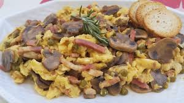

Receta del Revuelto de Setas con Bacon
Ingredientes
200g Setas (champiñón o mezcla)
50g Bacon
1 cucharada de AOVE
3 huevos
½ diente de ajo (opcional)
Sal y pimienta
Perejil o cebollino para decorar

Pasos para la elaboración
Calentar aceite y añadir ajo picado.
Saltear las setas.
Agregar bacon y dorar.
Batir los huevos, salpimentar y añadir.
Remover suavemente hasta que cuaje.
Decorar con perejil o cebollino.
PDF de su receta
(Has puesto el PDF de la tortilla por falta de otro)
Volver a Inicio